Front
REPLACEMENT
1. Loosen the wheel nuts slightly.
2. Raise the front of the vehicle, and support it with safety stands in the proper locations.
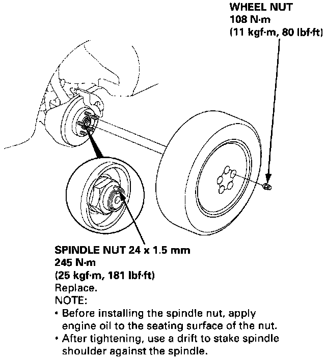
3. Remove the wheel nuts and front wheel.
4. Raise the locking tab on the spindle nut, then remove the nut.
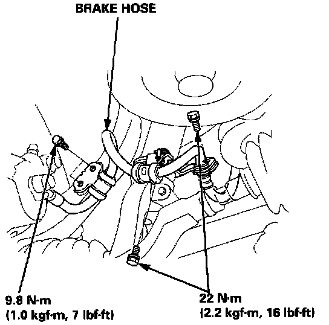
5. Remove the brake hose mounting bolts.
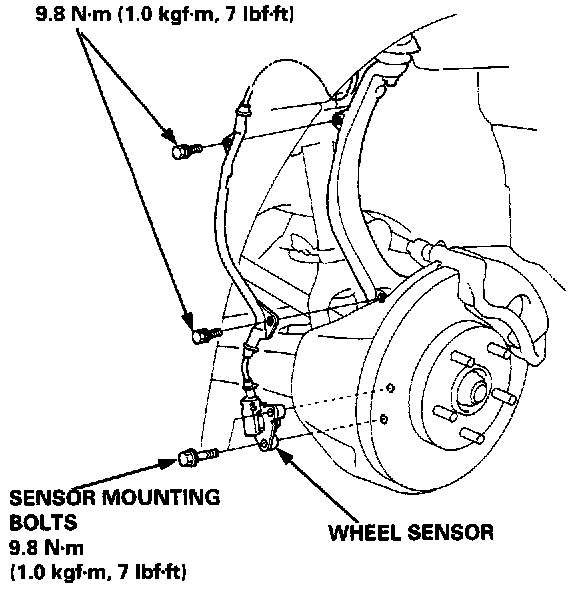
6. Remove the wheel sensor from the knuckle.
NOTE: Do not disconnect the wheel sensor connector.
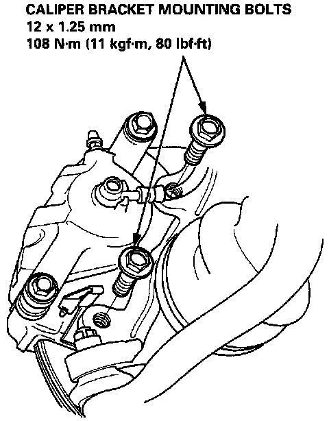
7. Remove the caliper bracket mounting bolts, and hang the caliper assembly to one side.
CAUTION: To prevent accidental damage to the caliper or brake hose, use a short piece of wire to hang the caliper from the under-carriage.
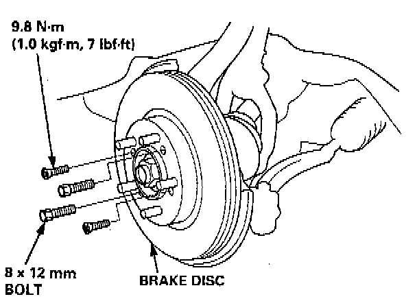
8. Remove the 6 mm brake disc retaining screws.
CAUTION: Be careful not to damage the ball joint boot.
9. Screw two 8 x 12 mm bolts into the disc to push it away from the hub.
NOTE: Turn each bolt two turns at a time to prevent cocking the disc excessively.
10. Clean any dirt or grease off the ball joint.
11. Remove the cotter pin from the ball joint castle nut, and remove the nut.
12. Install a 12 mm hex nut on the ball joint. Be sure that the 12 mm hex nut is flush with the ball joint pin end to prevent damage to the threaded end of the ball joint.
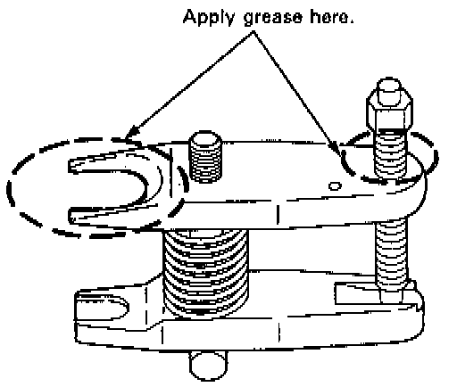
13. Apply grease to the special tool on the areas shown. This will ease installation of the tool and prevent damage to the pressure bolt threads.
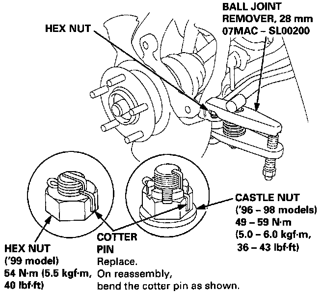
14. Install the special tool as shown. Insert the jaws carefully, making sure you do not damage the ball joint boot. Adjust the jaw spacing by turning the pressure bolt.
NOTE: If necessary, apply penetrating type lubricant as shown.
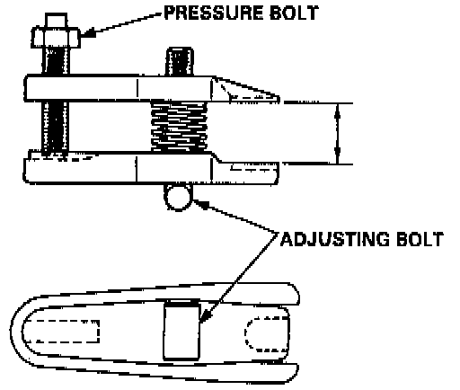
15. Once the tool is in place, turn the adjusting bolt as necessary to make the jaws parallel. Then hand tighten the pressure bolt, and recheck the jaws to make sure they are still parallel.
NOTE: After making the adjustment to the adjusting bolt, be sure the head of the adjusting bolt is in this position to the allow the jaw to pivot.
16. With a wrench, tighten the pressure bolt until the ball joint shaft pops loose from the steering arm.
WARNING: Wear eye protection. The ball joint can break loose suddenly and scatter dirt or other debris in your eyes.
17. Remove the tool, then remove the nut from the end of the ball joint, and pull the ball joint out of the steering/suspension arm. Inspect the ball joint boot, and replace it if damaged.
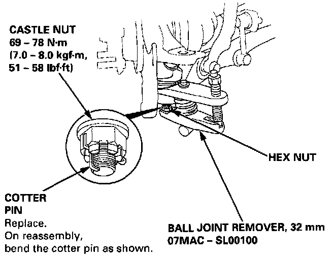
18. Remove the cotter pin and lower arm ball joint nut.
19. Install a 14 mm hex nut on the ball joint. Be sure that the 14 mm hex nut is flush with the ball joint pin end, or the threaded section of the ball joint pin might be damaged by the ball joint remover.
20. Use the special tool to separate the ball joint and lower arm.
NOTE: If necessary, apply penetrating type lubricant to loosen the ball joint.
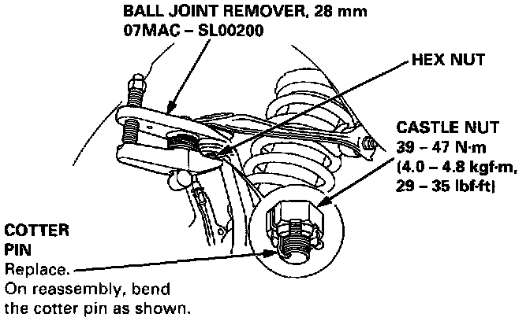
21. Remove the cotter pin and the upper ball joint nut.
22. Install a 10 mm hex nut on the ball joint. Be sure that the 10 mm hex nut is flush with the bail joint pin end, or the threaded section of the ball joint pin might be damaged by the ball joint remover.
23. Use the special tool to separate the ball joint and knuckle.
Wheel Bearing Replacement
NOTE: If necessary, apply penetrating type lubricant to loosen the ball joint.
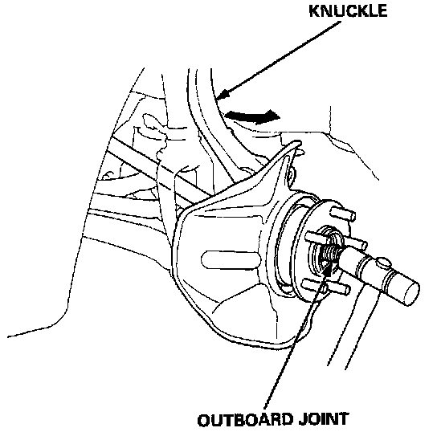
24. Pull the knuckle outward, and remove the driveshaft outboard joint from the knuckle by tapping the driveshaft end with a plastic hammer, then remove the steering knuckle.
NOTE: Replace the bearing with a new one after removal.
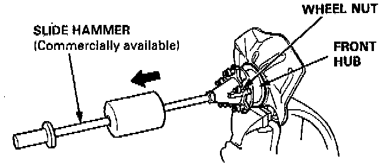
25. Carefully clamp the caliper bracket mount section of the knuckle in a vise with soft jaws.
26. Separate the hub from the knuckle using a commercially available hub puller.
CAUTION:
- Hold the steering knuckle securely so it does not slip out of the vise from the impact.
- Take care not to distort the splash guard.
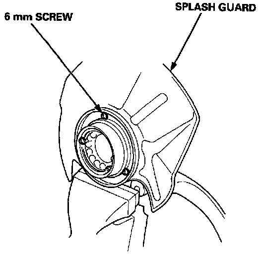
27. Remove the splash guard.
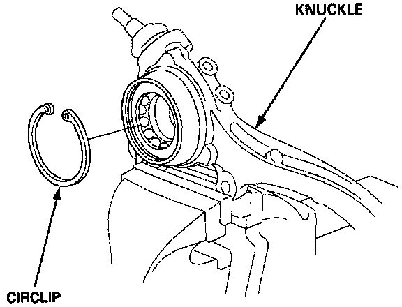
28. Remove the circlip from the knuckle.
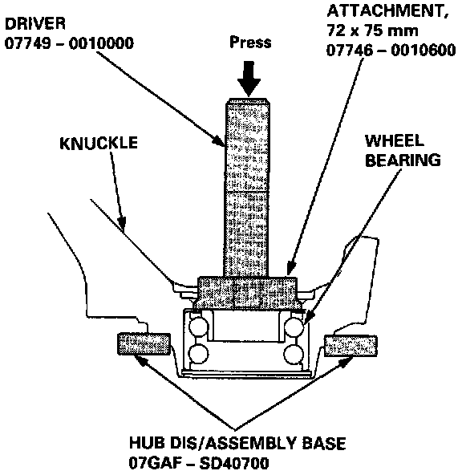
29. Press the wheel bearing out of the steering knuckle using the special tools and a press.
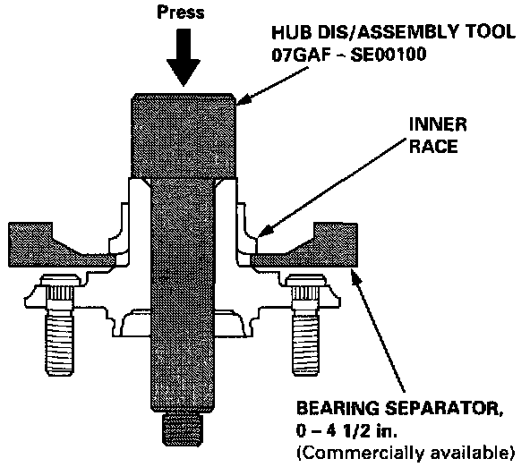
30. Remove the outboard bearing inner race from the hub using the special tools and a commercially available bearing separator.
NOTE: Wash the knuckle and hub thoroughly in high flash point solvent before reassembly.
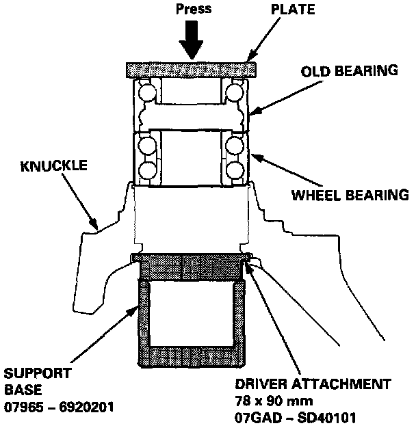
31. Press a new wheel bearing into the knuckle using the old bearing, plate and a press.
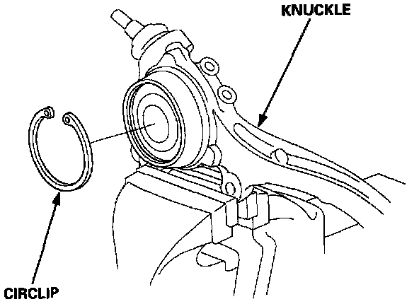
32. Install the circlip securely in the knuckle groove.
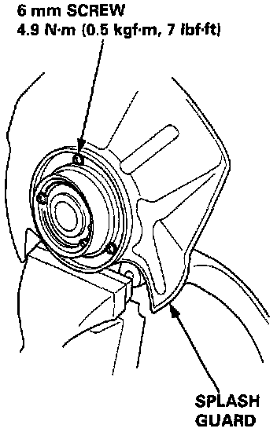
33. Install the splash Guard and tighten the screws.
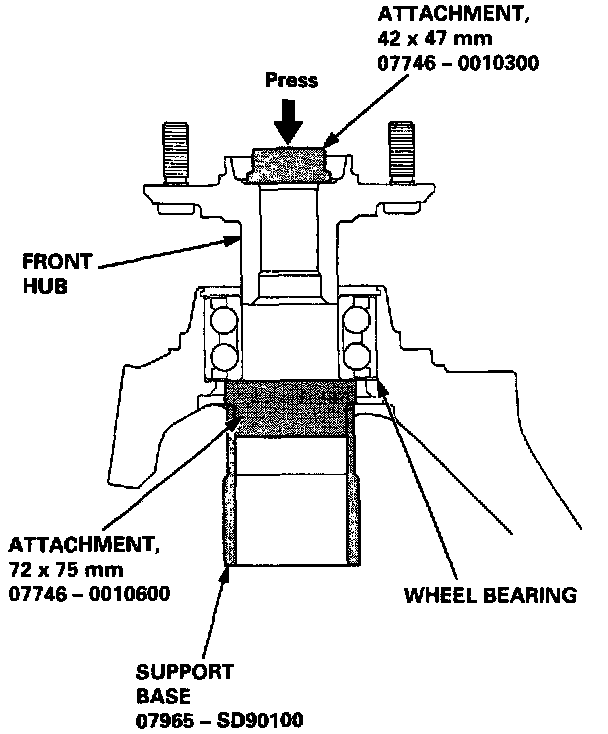
34. Place the front hub in the special tool fixture, then set the knuckle in position, and apply downward
35. Install in reverse order of removal.
Ball Joint Boot Replacement
1. Remove the set ring and the boot.
CAUTION: Do not contaminate the boot installation section with grease.
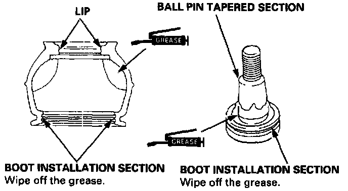
2. Pack the interior of the boot and lip with grease.
3. Wipe the grease off the sliding surface of the ball pin and pack with fresh grease.
CAUTION:
- Keep grease off the boot installation section and the tapered section of the ball pin.
- Do not allow dust, dirt, or other foreign materials to enter the boot.
4. Install the boot in the groove of the boot installation section securely, then bleed air.
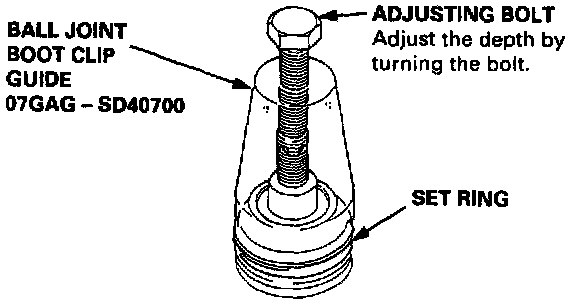
5. Install the upper and lower ball joint boot set rings using the special tools as follows: Adjust the special tool with the adjusting bolt until the end of the tool aligns with the groove on the boot. Slide the set ring over the tool and into position.
CAUTION: After installing the boot, check the ball pin tapered section for grease contamination and wipe it if necessary.